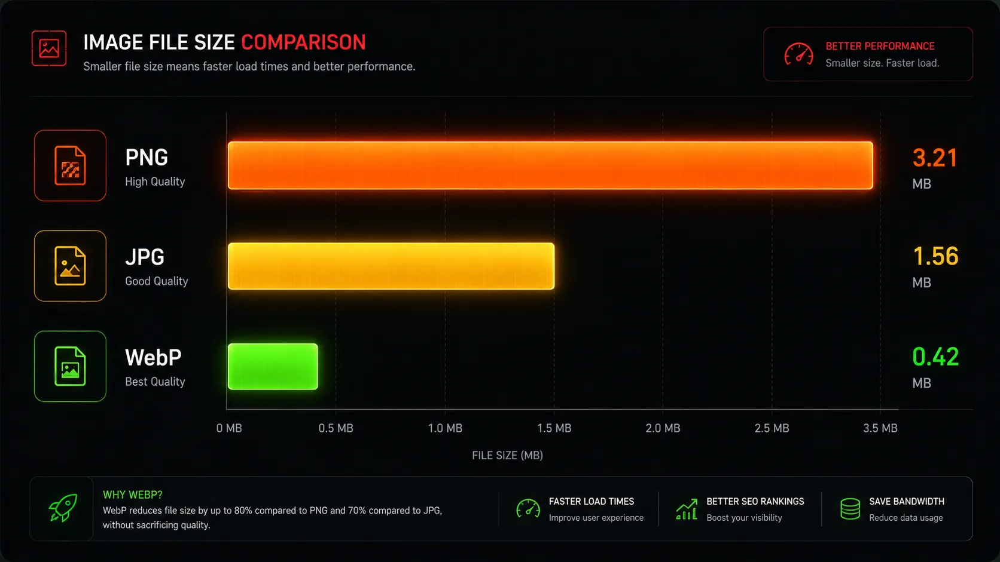

Choosing the right image format is arguably one of the most critical foundational decisions in web design and development. Make the right choice, and your website feels incredibly snappy, responsive, and professional. Make the wrong choice, and your visitors will be left staring at a blank loading screen, eventually abandoning your site altogether.

At Webp Moder by Shekh, our entire focus is on image optimization and performance. In this comprehensive, deep-dive guide, we will break down the technical strengths, weaknesses, and ideal use cases for JPG, PNG, and WebP, providing a definitive answer on what you should be using in 2026.
1. JPG (JPEG): The Classic Photograph Standard
The Joint Photographic Experts Group (JPEG) format has been the reigning champion of digital photography for over two decades. It utilizes a lossy compression algorithm. This means that to save disk space, the JPEG algorithm permanently deletes ("loses") hidden visual color data that the human eye cannot easily perceive.
JPG Characteristics Legacy
- Best For: High-color photographs, portraits, and complex real-world images with smooth gradients.
- Pros: Supported universally on every single device, browser, and software application ever created. File sizes are generally manageable.
- Cons: Absolutely zero support for background transparency. Text, sharp lines, and vector-style graphics can suffer from severe "artifacting" (blurriness and color bleeding).
2. PNG: The Champion of Transparency
Portable Network Graphics (PNG) was created specifically as an upgrade to the older, limited GIF format. Unlike JPG, PNG utilizes lossless compression. It does not throw away any data. Every single pixel is perfectly preserved, ensuring that lines remain razor-sharp. Most importantly, PNG supports the Alpha Channel.
PNG Characteristics Heavy
- Best For: Corporate logos, UI icons, charts, infographics, and any image that requires a see-through transparent background.
- Pros: Absolute visual perfection. It handles transparency beautifully and keeps text incredibly crisp.
- Cons: File sizes are massively bloated. Using a PNG to save a complex photograph will result in a colossal file that will drastically slow down your website's load time.
3. WebP: The Ultimate Hybrid Solution
Developed specifically for the modern internet by Google, WebP was engineered to do something neither JPG nor PNG can do on their own: it excels at everything. WebP is a hybrid format that offers both lossy (like JPG) and lossless (like PNG) compression, alongside full support for transparency and even animation.
WebP Characteristics The Winner
- Best For: Almost every single image on your modern website, from massive hero banners to transparent cut-out product logos.
- Pros: Averages 25% to 34% smaller file sizes than JPGs. Averages 26% smaller file sizes than PNGs. Drastically boosts website speed and Core Web Vitals SEO rankings.
- Cons: A few highly specialized legacy desktop applications may require plugins to edit WebP files natively, though this is practically a non-issue in 2026.

"By replacing all your JPEGs and PNGs with WebP, you get the photographic quality of a JPG and the transparency of a PNG, but with significantly smaller file sizes. It is the perfect technical compromise."
The Final Verdict: Which Format Wins?
When it comes to web performance, user experience, and SEO, WebP is the undisputed winner. It effectively renders JPG and PNG obsolete for web delivery.
Unless you are delivering high-resolution files for professional print media (where TIFF or maximum-quality JPGs are still preferred), you should be serving optimized WebP images to your website visitors. This single change will reduce your server bandwidth costs and ensure your website passes Google's Core Web Vitals speed tests with flying colors.
Make the Switch Today for Free
There is no need to purchase expensive software. You can convert all your legacy JPG and PNG files safely in your browser using our client-side tool.
⚡ Convert Your Images to WebPFrequently Asked Questions
Will converting JPG to WebP reduce visual quality?
No, not visibly. Our WebP converter tool allows you to set the quality slider. Setting it at 80-85% will dramatically reduce the file size while maintaining a visual quality that is completely identical to the original JPG to the human eye.
Should I delete my original PNGs after converting?
It is always a best practice to keep your original high-resolution PNGs in your personal master files or cloud backups. However, for uploading to your web server, CMS, and serving to users, you should only use the converted WebP versions.
Why don't some old websites use WebP?
Many older websites were built before WebP gained universal browser support. Updating an entire massive database of images requires time and developer resources, so many legacy sites are stuck using outdated JPEGs.
Conclusion
The debate is officially settled. For the vast majority of web development and content creation tasks, WebP provides the ultimate balance of quality and performance. Take the time to audit your website's media library, run your heavy assets through Webp Moder by Shekh, and enjoy the immediate benefits of a faster, leaner website.